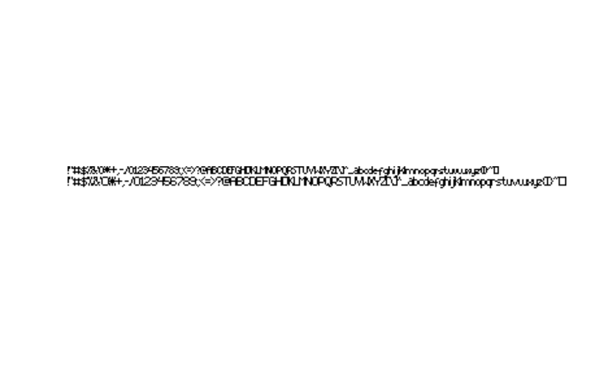

A comprehensive representation of monochromous Amiga bitmap fonts.
Details
Nowadays fonts are represented by vector graphics an computer systems.
On the original Commodore Amiga, the screen resolution, system memory
and cpu speed were limited. On those systems, it was more efficient
to use bitmap images to represent the glyphs in fonts. The
AmigaBitmapFontSet and AmigaBitmapFont classes can be used
to represent Amiga bitmap fonts.
The Commodore Amiga had a directory named 'FONTS' located in the root, where (bitmap) fonts were stored. Font sets were stored under the font name with a *.font extension. Files with the *.font extension did not contain the bitmap images of the font. Rather the *.font file contained information on which font heights (in pixels) are available, in addition to some other meta-information.
The bitmap images were stored in separate files for each individual
height. The AmigaBitmapFontSet is an S3 class that forms
a comprehensive format (named list) to represent the *.font
files. The AmigaBitmapFont is an S3 class is a comprehensive
format (named list) that represent each font bitmap and glyph
information. The AmigaBitmapFontSet objects will hold one or more
AmigaBitmapFont objects.
The AmigaBitmapFont and AmigaBitmapFontSet objects are
essentially named lists. Their structure and most important
elements are described below. Although it is possible to replace
elements manually, it is only advisable when you know what you
are doing as it may break the validity of the font.
AmigaBitmapFontSet
fch_FileID: Afactorwith levels 'FontContents', 'TFontContents' and 'ScalableOutline'. It specifies the type of font. Currently only the first level is supported.fch_NumEntries: number of font heights available for this font. It should match with the length ofFontContents. Do not change this value manually.FontContents: This is alistwith bitmap entries for each specific font height (in pixels). The name of each element in this list is 'pt' followed by the height. Each element in this list holds the elements:Miscellaneous: Miscellaneous information from the \*.font file
fc_FileName: This element represents the filename of the nested font bitmap images. Note that it should be a valid Commodore Amiga filename. It is best to modify this name usingfontName(). Note that this field could cause problems as Commodore Amiga filenames can contain characters that most modern platforms would not allow (such as the question mark).BitmapFont: This element is of typeAmigaBitmapFontand is structured as described in the following section. The information in this element is no longer part of the *.font file.
AmigaBitmapFont
Information represented by a AmigaBitmapFont is not stored
in *.font files. Rather it is stored in sub-directories of the font
in separate files. It has the following structure:
Miscellaneous: Elements with information on the font properties and style, and also relative file pointers.
glyph.info: Adata.framecontaining glyph info with information for specific glyphs on each row. Each row matches with a specific ASCII code, ranging fromtf_LoCharup totf_HiChar. There is an additional row that contains information for the default glyph that is out of the range of thetf_LoCharandtf_HiChar. Thedata.framethus has2 + tf_HiChar - tf_LoCharrows. This table is used to extract and plot a glyph from thebitmapimage correctly.bitmap: Is a monochromous bitmap image of all the font's glyphs in a single line. It is a simplerasterobject (seegrDevices::as.raster()) with an additional attribute 'palette', which lists the two colours in the image. In this palette, the first colour is the background colour and the second colour is interpreted as the foregroundcolour.
Useful functions
For importing and exporting the following functions are useful:
read.AmigaBitmapFont(), read.AmigaBitmapFontSet(),
write.AmigaBitmapFont() and write.AmigaBitmapFontSet().
The following generic functions are implemented for these objects:
plot(), print,
as.raster() and as.raw().
Use c() to combine one or more
AmigaBitmapFont objects into a AmigaBitmapFontSet.
References
http://amigadev.elowar.com/read/ADCD_2.1/Libraries_Manual_guide/node03E0.html http://amigadev.elowar.com/read/ADCD_2.1/Libraries_Manual_guide/node03DE.html http://amigadev.elowar.com/read/ADCD_2.1/Libraries_Manual_guide/node05BA.html
See also
Other AmigaBitmapFont.operations:
availableFontSizes(),
c(),
fontName(),
font_example,
getAmigaBitmapFont(),
rasterToAmigaBitmapFont(),
rawToAmigaBitmapFontSet(),
rawToAmigaBitmapFont(),
read.AmigaBitmapFontSet(),
read.AmigaBitmapFont(),
write.AmigaBitmapFont()
Other raster.operations:
as.raster.AmigaBasicShape(),
bitmapToRaster(),
dither(),
index.colours(),
rasterToAmigaBasicShape(),
rasterToAmigaBitmapFont(),
rasterToBitmap(),
rasterToHWSprite(),
rasterToIFF()
Examples
## 'font_example' is an example of the AmigaBitmapFontSet object:
data(font_example)
## An AmigaBitmapFont object can also be extracted from this object:
font_example_9 <- getAmigaBitmapFont(font_example, 9)
## the objects can be printed, plotted, converted to raw data or a raster:
print(font_example)
#> AmigaFFH
#> y-size 8, diskfont, proportional, designed
#> y-size 9, diskfont, proportional, designed
plot(font_example)

font_example_raw <- as.raw(font_example)
font_example_raster <- as.raster(font_example)
## You can also format text using the font:
formated_raster <- as.raster(font_example, text = "Foo bar", style = "bold")
plot(font_example, text = "Foo bar", style = "underlined", interpolate = FALSE)